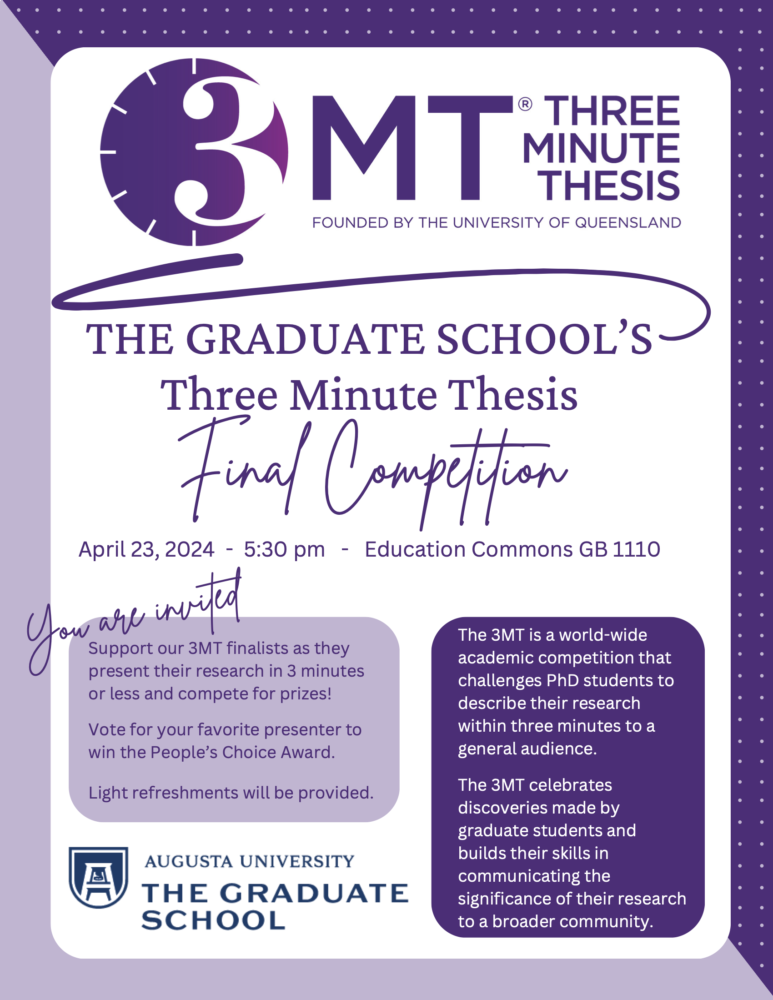

3MT: Smashing Software Bugs with Proofs
In Spring 2024, I participated in the scientific communication competition, 3 Minute Thesis (3MT), organized by The Graduate School at Augusta University.
On 14 January 2025, representing Augusta University, I presented my 3MT pitch in Atlanta at the board meeting of the University System of Georgia.
The Three Minute Thesis competition celebrates the exciting research conducted by Doctor of Philosophy students. Developed by The University of Queensland, 3MT cultivates students’ academic, presentation, and research communication skills. The competition supports their capacity to effectively explain their research in three minutes, in a language appropriate to a non-specialist audience.

Additional Information
- The Challenge of a Thesis in 3 Minutes - by Dr. Patricia Cameron
- Three Minute Thesis - The University of Queensland website
- 3MT Preparation Handout - from Augusta University